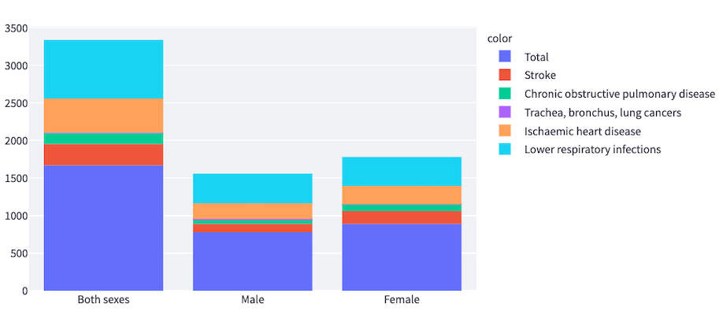

Home
Overview
Python has become a popular language due to its versatility. Although Python is a general-purpose language, data scientists have adopted Python as the preferred programming language. Pandas is a Python package data structure for data analysis and manipulation. I choose to work with Python and Pandas because it is a programming language that is easy to understand.
Visit Python.org to learn more...
What types of data can we use with Pandas?
- Tabular data
- Ordered and unordered data
- Arbitrary matrix data
- Any other form of observational / statistical data sets
Data manipulation with Pandas
The following stacked bar graph has been built with Python, Pandas, Plotly Express, and Plotly.
